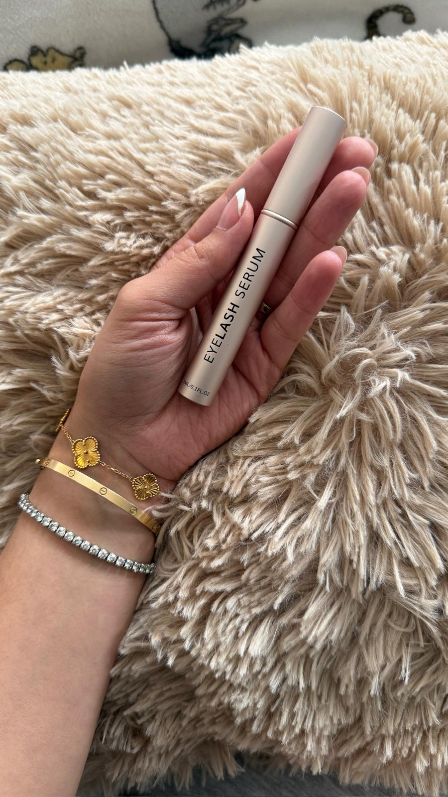

The lash serum made by someone who's done extensions for six years — so you don't have to choose.
You love your extensions — the fill every three weeks, the length, waking up already done. But underneath them, something's been quietly changing.
"Puffy and red lash lines" — natural lashes "falling out quickly and growing back slowly."Extension-wear pattern, category research
Reviewers describe their natural lashes as "ruined" after years of extension wear.Category research
of extension wearers experience documented lash damage — breakage, thinning, or loss — from the extensions themselves.
Journal of Cosmetic Dermatology, via category research
Most category leaders lean on prostaglandin-style actives — the exact ingredient class behind the eye-irritation complaints you've probably read about. Pro Lash doesn't.
Peptides, hyaluronic acid, vegetable keratin, biotin, and pumpkin seed oil do the work instead — no fine print.
Formulated to be worn safely alongside your extensions — no break required to start healing.
One pass along the lash line, nightly. Vegan, organic, and clinically proven.

Pro Lash was formulated by someone who spent six years as a working lash technician — watching client after client come in with lash lines that had quietly thinned out underneath their extensions.
Not because anyone did anything wrong. Because nobody had built a serum for the person who wasn't going to stop wearing extensions to fix it. So we built one.
Formulated with peptides, hyaluronic acid, vegetable keratin, biotin, and pumpkin seed oil.
Category leaders charge £35–38 for a single comparable unit. Here's ours.
No prostaglandins — that's the ingredient class behind most of those complaints. Pro Lash is built on peptides, hyaluronic acid, vegetable keratin, and biotin instead.
Yes. Pro Lash is formulated to be worn safely underneath your extensions — you don't need to take a break to start using it.
Not here — the formula is clinically proven. Vegan and effective aren't a trade-off in this case.
No markup for a risk you don't want. We're not chasing premium-for-premium's-sake — we're pricing to actually solve this problem for the person facing it.
Fair — a lot of them don't work as advertised. Pro Lash's results are clinically proven, and it's formulated by someone who's watched this exact problem for six years, not a generic beauty lab.
Vegan, prostaglandin-free, and safe to wear underneath your extensions — from €29.49.
Shop Pro Lash